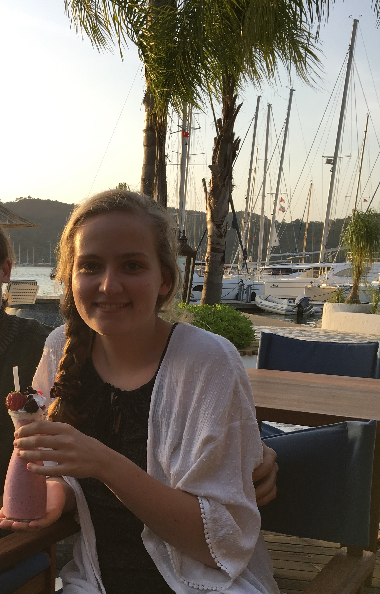

I am Manon Bierman, a student at Leiden University following the master Book and Digital Media Studies. I started at Leiden University in 2016 with the bachelor English Langauge and Culture. After completing this bachelor I continued in Leiden with the master English Literature and Culture, part of the MA programme Literary Studies.
Languages
Knowledge
| Prior Knowledge | Expectations |
| None whatsoever (about digital media technology) | Good understanding of HTML, XML, CSS, and more. Basically all things digital media and text! |
I am the owner of two guinea pigs and a bearded dragon, whom I all love dearly.